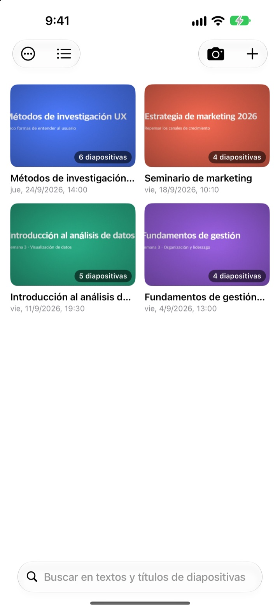
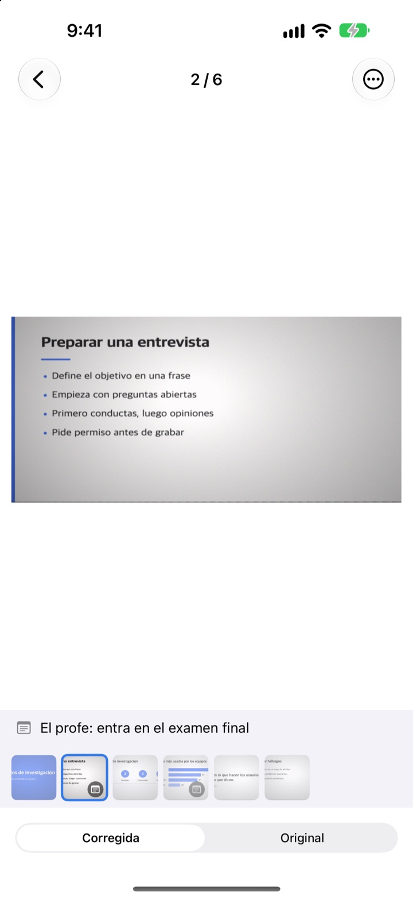
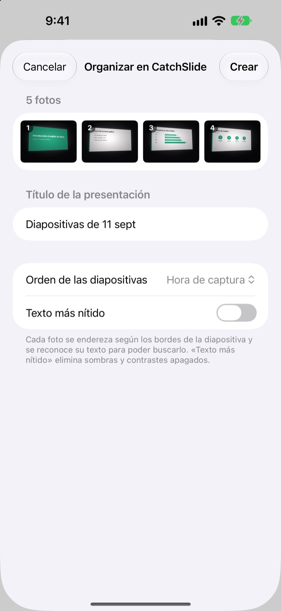
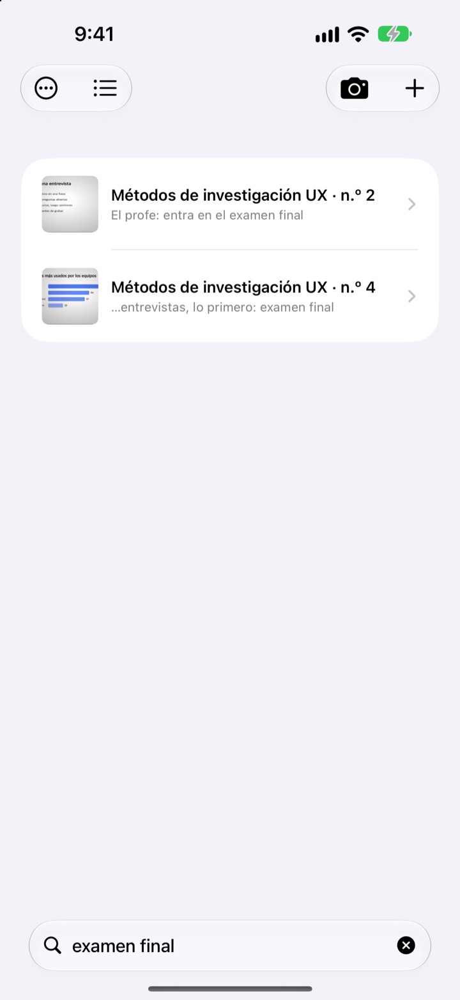

La fotografías de lado.
La guardas de frente.
La cámara encuentra las cuatro esquinas de la diapositiva, la endereza y recorta todo lo que la rodea. Las que haces seguidas quedan juntas en una misma presentación.
Un solo pago y todas las funciones. Sin suscripción y sin cuenta.

Enderézala tú
Esta foto se hizo en diagonal desde un asiento lateral del aula. El contorno verde marca las esquinas encontradas.
¿Te ha pasado abrir el carrete para repasar y no encontrar la diapositiva?
Las fotos desde las últimas filas salen torcidas y acaban perdidas entre selfis y tickets. En un aula en silencio, el sonido del obturador ya te frena. CatchSlide fotografía sin ruido, endereza cada diapositiva y las guarda juntas por presentación.
Recta desde el primer disparo
La cámara sigue en directo las cuatro esquinas de la diapositiva y se pone verde cuando las tiene. Aunque la hagas en diagonal, queda como vista de frente y sin el fondo.
No hace ruido al disparar. Activa Captura automática y tomará cada diapositiva nueva en cuanto cambie, saltándose las fotos movidas.

Las fotos que ya tienes, de una vez
Elige varias fotos de clase en la app Fotos y compártelas con CatchSlide. Se enderezan y se guardan como una sola presentación, en el orden en que las hiciste.
Con Texto más nítido desaparecen las sombras y el contraste apagado.

Encuéntrala con la palabra que recuerdes
CatchSlide lee el texto de cada diapositiva en tu dispositivo. Semanas después, una sola palabra te lleva a esa diapositiva.
Las notas que añadas también se pueden buscar. Escribe examen en algunas y tendrás todo el temario a una búsqueda.

Empieza en tres pasos
- 1
Abre la cámara
Desde el botón de la lista, el widget de la pantalla de inicio o la pantalla bloqueada.
- 2
Encuadra la diapositiva
Cuando las esquinas se pongan verdes, dispara o deja que lo haga la captura automática.
- 3
Repasa por presentación
Busca, añade notas y exporta un PDF para estudiar.
Qué puedes hacer con una presentación
- Grabación
- Graba mientras fotografías y escucha cada diapositiva desde el momento en que la tomaste
- Transcripción
- Pasa la grabación a texto, muestra lo que se dijo en cada diapositiva y entra en la búsqueda
- Resumen con IA
- Resume la presentación a partir del texto de las diapositivas y la transcripción (iOS 26 o posterior en dispositivos compatibles con Apple Intelligence)
- Apuntes para repasar con una, dos o cuatro diapositivas por página
- Markdown
- Un .zip listo para Notion u Obsidian
- PowerPoint
- Exporta un .pptx con la transcripción en las notas del orador
- Combinar
- Elige varias presentaciones y únelas en una
- Sincronización con iCloud
- Actívala para ver tus presentaciones en tus otros dispositivos con el mismo Apple ID. Viene desactivada
- Widgets
- Abren la cámara directamente desde la pantalla de inicio o la pantalla bloqueada
El reconocimiento de texto, la transcripción y los resúmenes con IA se hacen en tu dispositivo.
Pagas una vez y lo tienes todo
CatchSlide
- Fotos sin ruido, captura automática y enderezado
- Importación de varias fotos desde Fotos
- Diapositivas por presentación, búsqueda en texto y notas
- Grabación, transcripción y resumen con IA
- Exportación a PDF, Markdown y PowerPoint
- Sincronización con iCloud y widgets
Propinas (opcional)
- Si la app te resulta útil, puedes dejarle una pequeña propina al desarrollador
- La propina no desbloquea nada. Todas las funciones van igual sin ella
Está en la pantalla Mis datos.
Sin suscripción ni compras para desbloquear funciones. Consulta el precio de tu país en el App Store.
Preguntas frecuentes
¿Cómo fotografío una diapositiva?
Abre la cámara y encuadra la diapositiva. Cuando las esquinas se pongan verdes, pulsa el obturador. Con la captura automática activada, tomará la siguiente cada vez que cambie la diapositiva.
¿Suena el obturador?
No. Guarda el fotograma directamente desde la cámara, así que es silenciosa en cualquier país.
¿Por qué se agrupan mis fotos en una sola presentación?
Si haces la siguiente foto antes de que pasen 5 minutos desde la anterior, se considera la misma presentación. Toca el título en la lista para cambiarle el nombre y usa Combinar presentaciones para unir las que se hayan separado.
¿Puedo añadir fotos que ya hice?
Sí. Selecciónalas en la app Fotos y compártelas con CatchSlide, o toca ＋ en la lista y elige Importar desde Fotos. Se enderezan y se guardan como una presentación en el orden en que las hiciste.
Las esquinas no se detectaron bien.
Abre la diapositiva, elige Ajustar esquinas en el menú ⋯ y arrastra las cuatro esquinas a su sitio. Detección automática las busca de nuevo e Imagen completa usa la foto entera. El original siempre se guarda, así que puedes rehacerlo cuando quieras.
¿Puedo buscar el texto de las diapositivas?
Escribe una palabra en el campo de búsqueda de la parte superior de la lista. Busca en el texto de las diapositivas, los títulos, las notas y las transcripciones, y te lleva directo a la diapositiva. El reconocimiento de texto se hace en tu dispositivo.
¿Cómo exporto un PDF?
Dentro de una presentación, abre el menú de compartir, elige Exportar como PDF y decide si quieres una, dos o cuatro diapositivas por página. Desde la hoja de compartir puedes guardarlo en Archivos o enviarlo a otra app.
¿Cómo cambio el orden o borro diapositivas?
Dentro de una presentación, mantén pulsada una diapositiva y arrástrala. En ese mismo menú puedes borrarla o compartirla, y con Seleccionar borras varias a la vez.
¿Cómo funcionan la grabación y el resumen con IA?
Activa Grabar arriba en la cámara y cada diapositiva guardará el audio de ese momento. En Notas de la presentación, Resumir con IA crea un resumen con el texto de las diapositivas y la transcripción. El resumen con IA requiere iOS 26 o posterior en un dispositivo compatible con Apple Intelligence.
¿Dónde se guardan mis diapositivas y grabaciones?
En tu dispositivo. Solo se suben a tu propio iCloud si activas Sincronización en Mis datos, y no necesitas ninguna cuenta. Más detalles en la Política de privacidad.
¿Dudas, errores o ideas? Escribe a leeo@kakao.com.